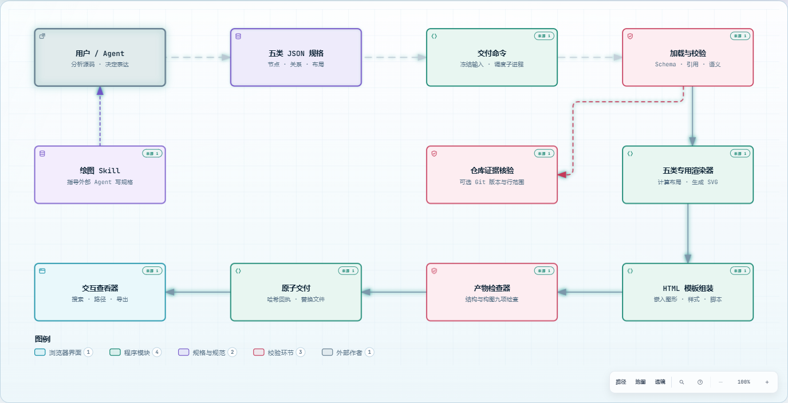
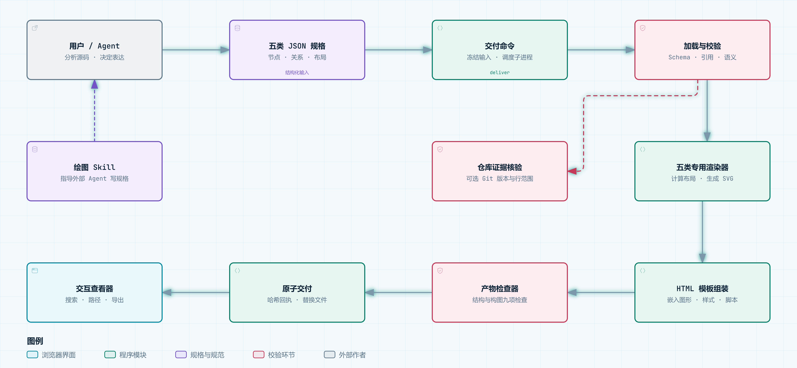

ARCHIFY × ARCHIFY / 真实代码，六个视角
用它自己的能力，
讲清它自己。
这次把 Archify 的源码作为研究对象。每张图回答一个不同问题，中文内容与关系由源码分析后整理，再交给原生渲染器生成。
同一份代码，换一个问题。
全部为真实 Archify HTML让图自己回答问题。
点击示例会切换上方图形交付命令会走到哪里？
高亮交付命令及其下游。范围来自已声明的有向关系，源码里的所有间接影响并不会自动补全。
这个节点依据哪段代码？
点选交付命令，查看节点说明与固定提交的源码链接。按 / 搜索；图内“地图”“透镜”提供概览与分类阅读。
先讲来源，再讲生成。
架构图有三个中文阅读章节：内容来源、生成验收、带证据阅读。原生查看器还能切换演示模式、播放连线动画。
实测限制：本次 Chrome 实测中，工具栏操作会清除当前聚焦，键盘确认也未能完成范围分享。下方路径和范围卡片通过查看器原生导出接口生成，保留了真实导出效果；菜单问题尚未修改上游实现。
内容不变，换一种表达。
4 种视觉预设 × 2 种主题
可在原生图中按 S 循环切换风格，按 T 切换深浅主题。SVG 内容与关系保持相同。
从交互网页，到可带走的文件。
下面均调用原生导出实现实际生成完整图形
PNG 无损图片、JPEG 紧凑图片、WebP 图片与 SVG 矢量文件。
{kind=link}
{kind=link}
{kind=link}
{kind=link}

约 6 秒动态演示
录制查看器中的连线动效。点击播放，观察处理链路。
下载 WebM ↓导出由当前 Chrome 浏览器验证；剪贴板复制仍取决于浏览器权限。查看导出文件大小、哈希与交互测试记录 ↗
写错规格，上一张好图还在。
真实预览服务实验记录我们启动了 Archify 的预览服务，故意写入损坏的 JSON，再修复。下面切换的是这次实验保存的状态；页面没有假装运行一个实时服务。
预览会监控输入并重建，通过验收才更新展示。此次实测覆盖“有效 → 无效 → 修复”路径，未穷举所有并发或文件系统异常。原始实验记录 ↗
每种视角，都能回到代码。
分析来源记录 ↗| 演示 | 代码依据 | 这张图说明什么 |
|---|
这套演示覆盖到哪里？
覆盖本版本五类图、架构差异、原生查看器的主要阅读操作、四种风格、深浅主题、图片与视频导出，以及预览保留上一版的行为。区域、分组、样式参数等配置仍可在 JSON 中扩展，不是额外图种。
这五类技术图不等于 UML 全家族；此库没有通用类图、用例图或源码 AST 关系抽取器。代码理解与图中关系来自本次分析，Archify 提供结构化规格、校验、排版、交互与交付。原生仓库源码引用与核验目前用于架构图；其余图的代码依据列在上表。
架构差异取自真实相邻提交，但比较的是根据代码编写的两个架构快照，且都由当前版本渲染。字体变化仅针对 JetBrains Mono 覆盖的字符；中文仍使用系统字体回退。